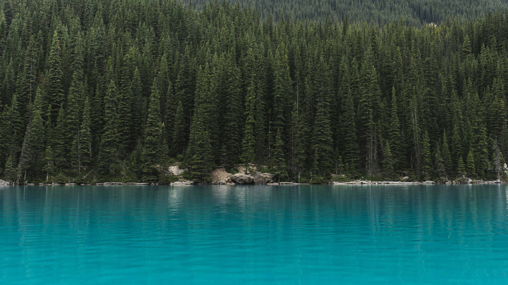
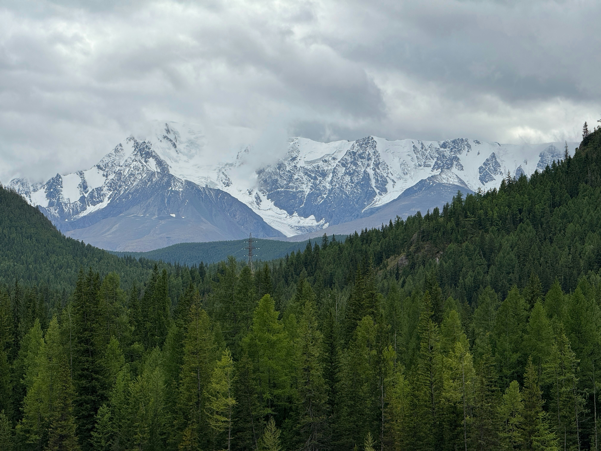

Taiga or tayga (/ˈtaɪ.ɡə/, TY-gə; Russian: тайга́, IPA: [tɐjˈɡa]), also known as boreal forest or snow forest, is a biome characterized by coniferous forests consisting mostly of pines, spruces, and larches.

The taiga, or boreal forest, is the world's largest land biome. [1] In North America, it covers most of inland Canada, Alaska, and parts of the northern contiguous United States. [2] In Eurasia, it covers most of Sweden, Finland, much of Russia from Karelia in the west to the Pacific Ocean (including much of Siberia), much of Norway, some lowland/coastal areas of Iceland, areas of northern Kazakhstan, northern Mongolia, and northern Japan (on the island of Hokkaido).[3]

The word taiga comes from the Russian tayga (тайга), a term historically used in Russia and other parts of northern Eurasia to describe extensive forested regions. The Russian term is believed to derive from Turkic or Mongolic roots, where related words refer to wooded or uninhabited forest lands. In English, taiga is often used interchangeably with boreal forest, but the two terms are sometimes distinguished in regional usage.